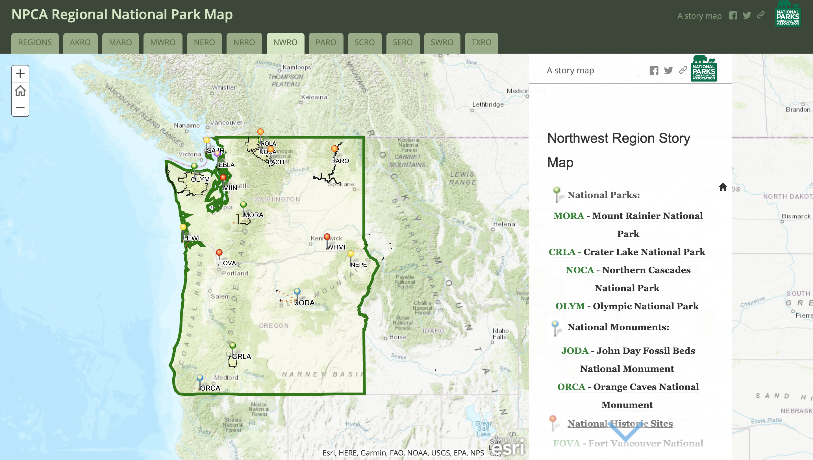

work

I created a customized interactive story map of all the National Parks across the country, specifically for the eleven NPCA regions across the country. This story map product is now used as the baseline for the communications work leading up to the NPCA Centennial in 2019.